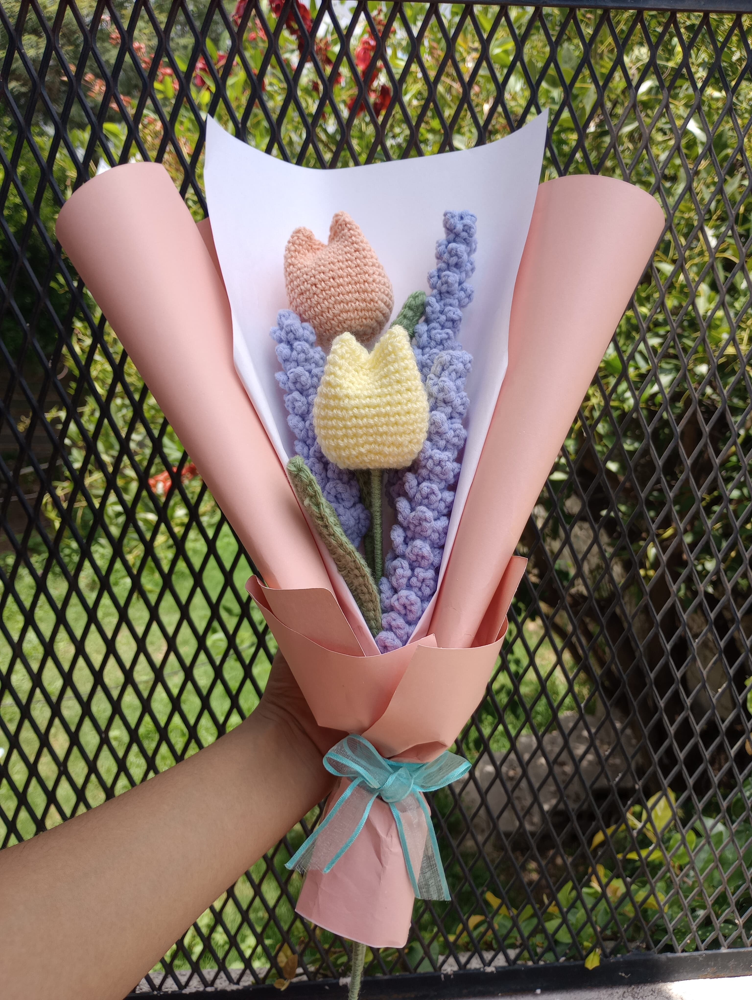
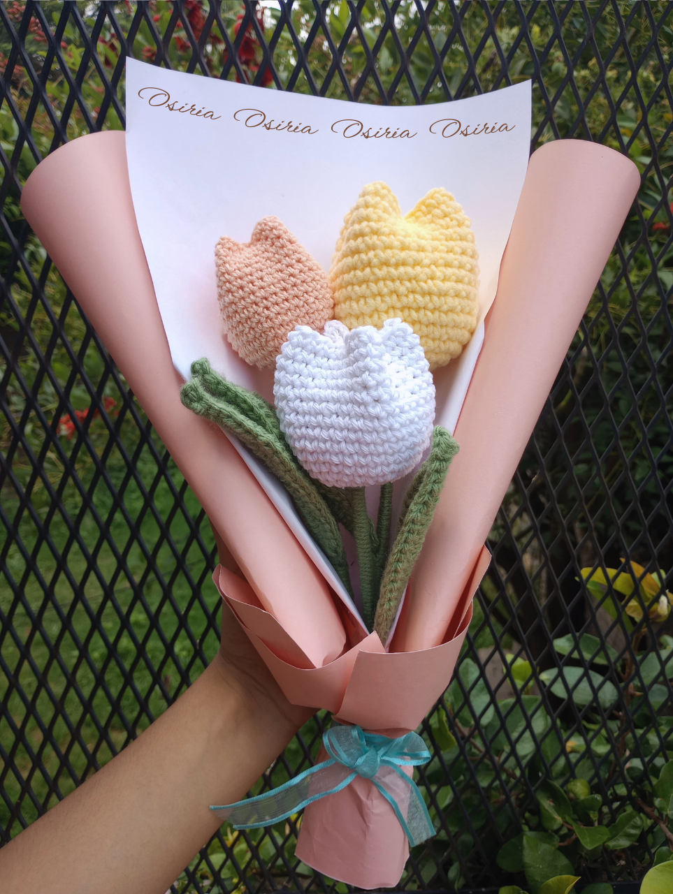
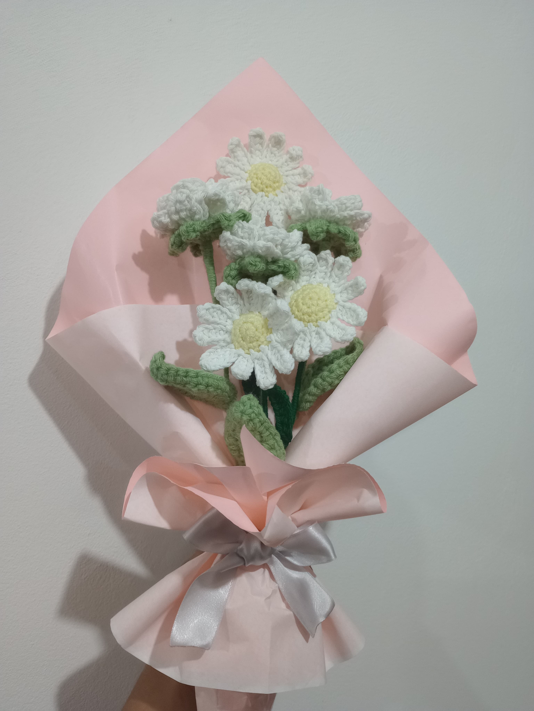
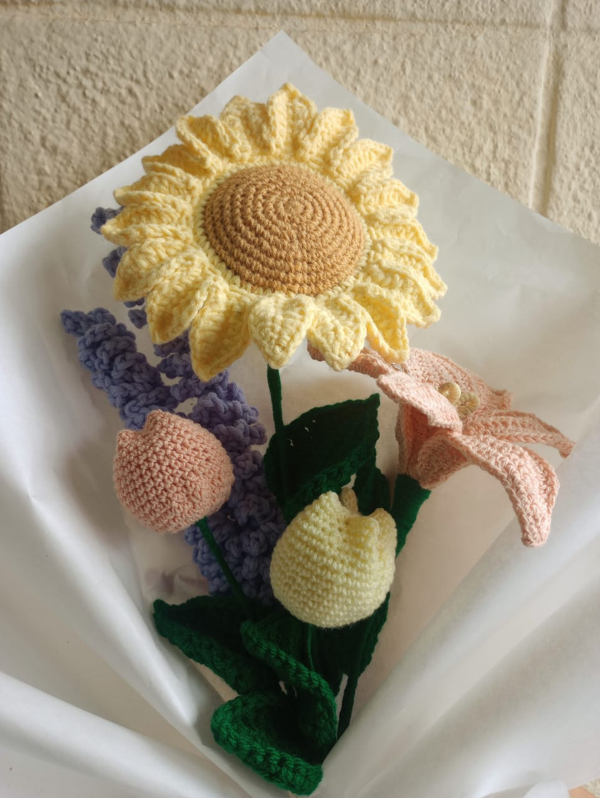

Ideas




Flores

Rosa con tallo de alambre y una hoja verde
Lavanda con tallo de alambre y hojas verdes
Este es un proyecto sobre arte en crochet. Encuentra ideas, ramos de flores y decoración a ganchillo.